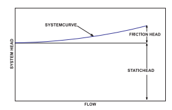
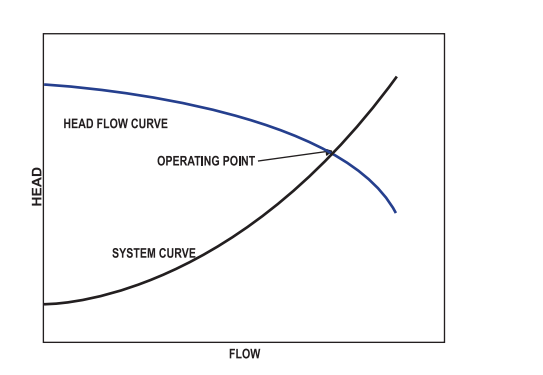
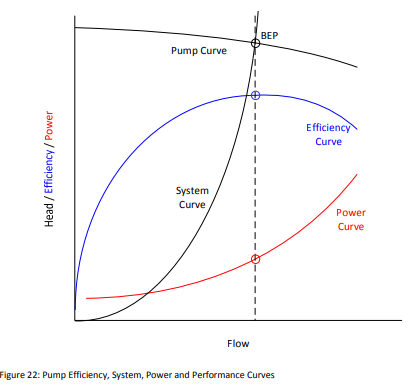

Friction head is the measure of resistance to flow provided by the pipe , valve etc.
The static head is the amount of feet of elevation the pump must lift the water
regardless of flow

It is a point where system curve and pump curve intersect

The vertical distance from the water line to the centerline of the impeller
The vertical distance from the discharge outlet to the point of discharge or liquid level when discharging into the bottom of a water tank.
Volume of Liquid delivered by pump per unit time in m^3/hr

The best efficiency point (BEP) refers to the most efficient operating point for a centrifugal pump. This is the point at which each pump should operate for optimal system design
To measure Electrical parameters such as kW, kVA, PF, Hz, Volts, Amps, kVAr.
To measure the discharge through the pump.
To measure the speed of the driven equipment and motor.
To measure pressure head at suction & discharge site.